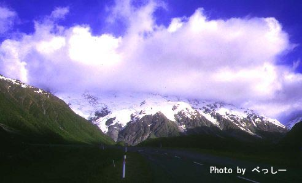
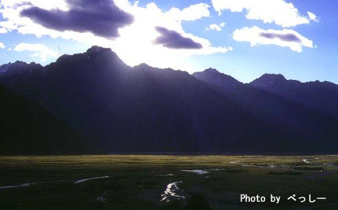
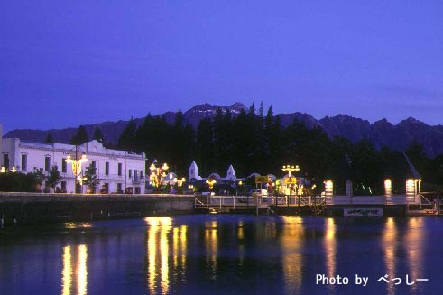
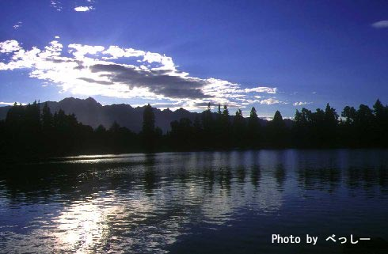

ニュージーランド ４ | |
|  Ｍｔ．クック |  Ｍｔ．クック |
| グルメＢＥＳＴ３（すべて日本に比べめちゃ安い） キッカー： １．ラム肉 ２．アイスクリーム ３．安ワイン ベッシー：１．ラム肉 ２．アイスクリーム ３．ピザ シュガー：ラム肉（ぶ厚み！かみ応え充分！）とワイン、ピザ | やり残したことＢＥＳＴ３ キッカー： １３５ｍバンジー、ヘリ＆トレッキング、のんびりする時間 ベッシー： カヌーツアー、ヘリ＆トレッキング、乗馬、シューティング シュガー； カヌー、乗馬、ヘリ乗ること |
 テカポ湖 |  クイーンズタウン |
| アクティビティーＢＥＳＴ３ キッカー： １．スカイダイビング ２．４輪バギー ３．ライブ・ワイヤー ベッシー： １．スカイダイビング ２．４輪バギー ３．ラフティング シュガー； １．ラフティング（コスト安） ２．スカイダイビング（景観） ３．地下発電所？趣味？ | 印象に残ったことＢＥＳＴ３ キッカー：１．羊の穴 ２．湖の色 ３．岩ゴロゴロ ベッシー：１．星空 ２．青い湖 ３．羊 シュガー；１．夜遅いが、南十字みたこと ２．エメラルドブルーな湖 ３．スカイダイビングのパートナー |
 クイーンズタウンの夕日 |  クイーンズタウンの朝 |
| 何か一言 キッカー： ＭＵＳＴ ＬＩＶＥ ＩＮ ＮＺ ！！ ベッシー： 移住！ シュガー； I WANT MORE STAYING Nｚ！ | Ｎｚ旅行の良いところBEST３ キッカー：１．アクティビティー ２．自然 ３．人 ベッシー： １．自然 ２．人 ３．値段 シュガー； １．自然 ２．アクティビティー ３．人のおおらかさ |
 アロー号 |  クイーンズタウン |
| Ｎｚ旅行で気をつけたいことBEST３ キッカー：１．フィッシュ＆チップス ２．いいかげん ３．体重 ベッシー： １．フィッシュ＆チップス ２．時間のゆとり ３．天気 シュガー； １．時間感覚なくなる（ないかも） ２．食生活 ３．お金（アクティビティーやりすぎ） | |